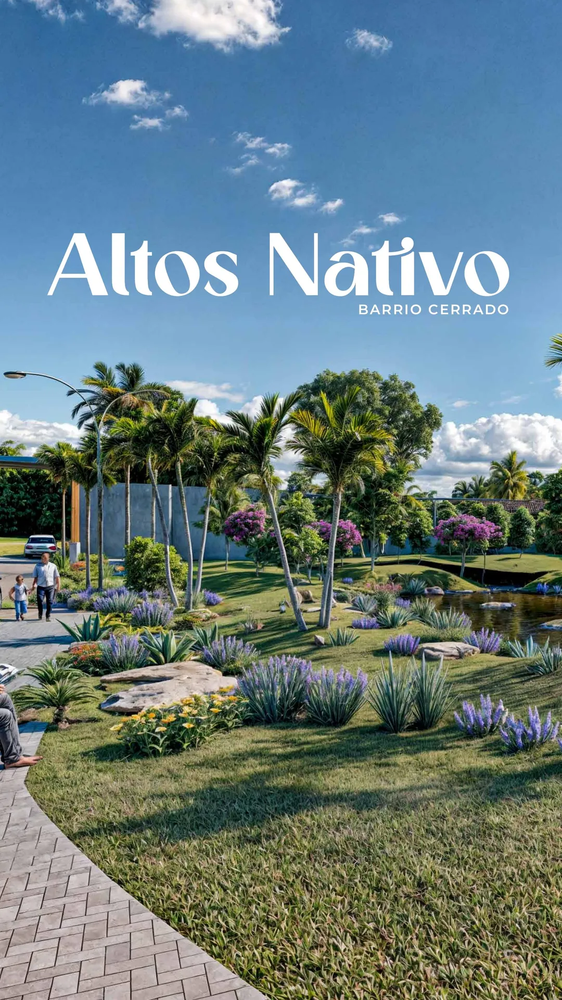
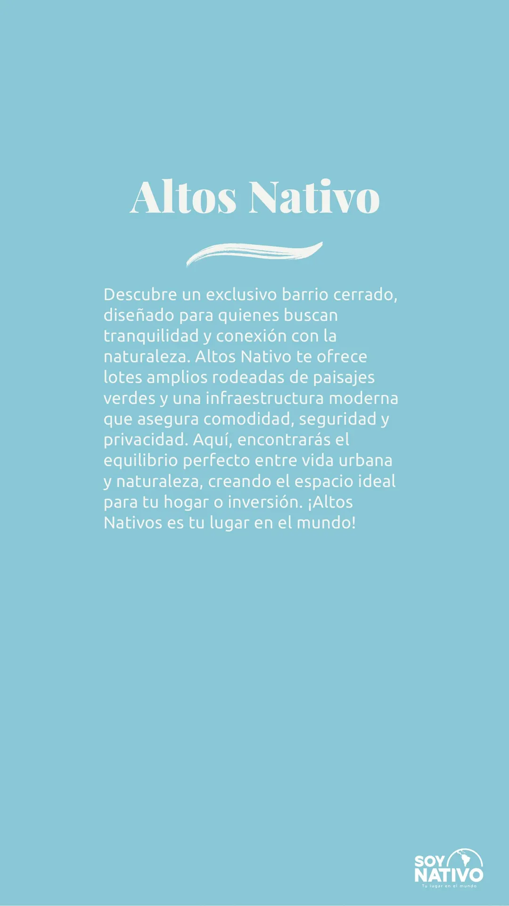
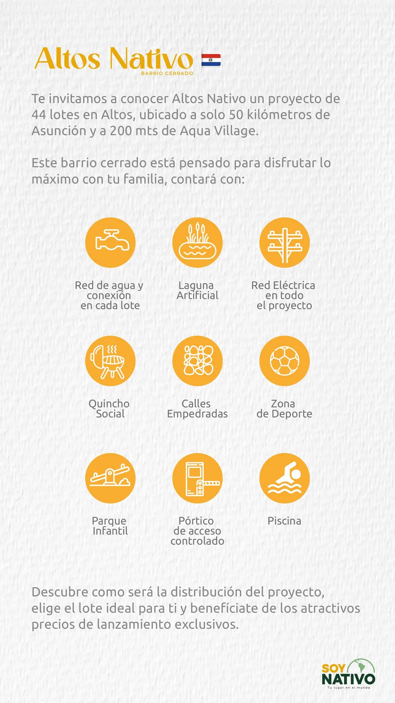
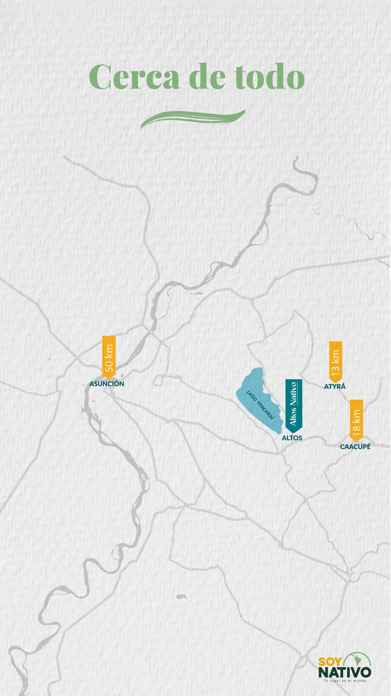
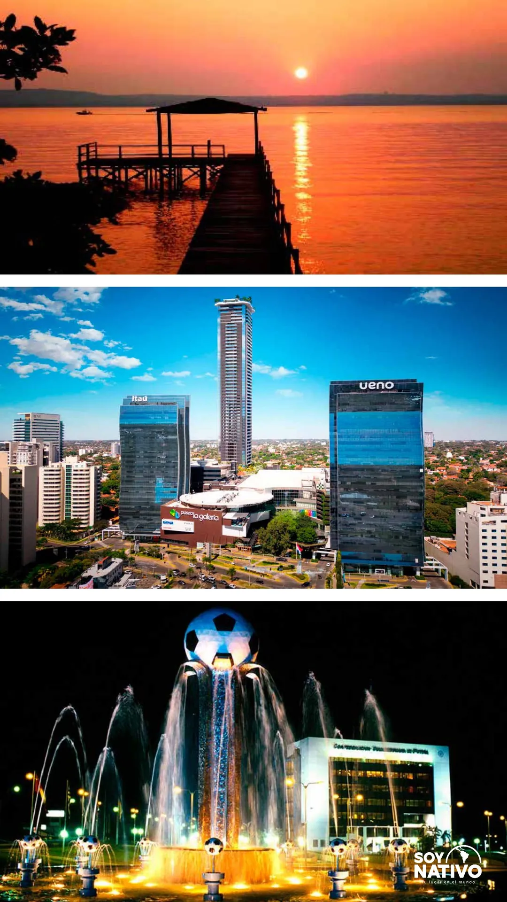
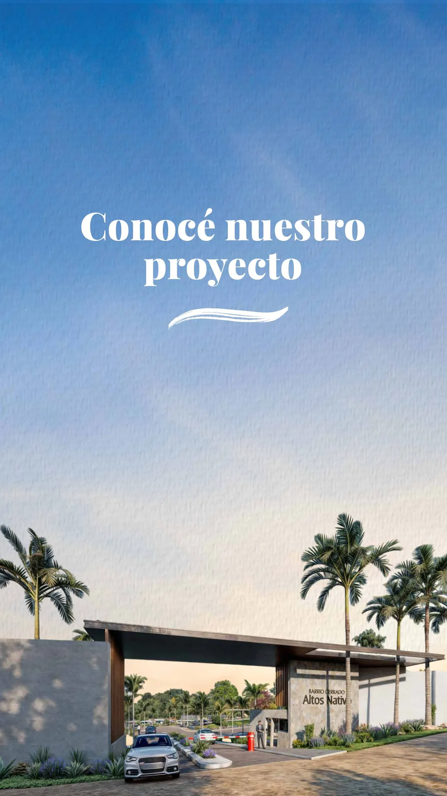
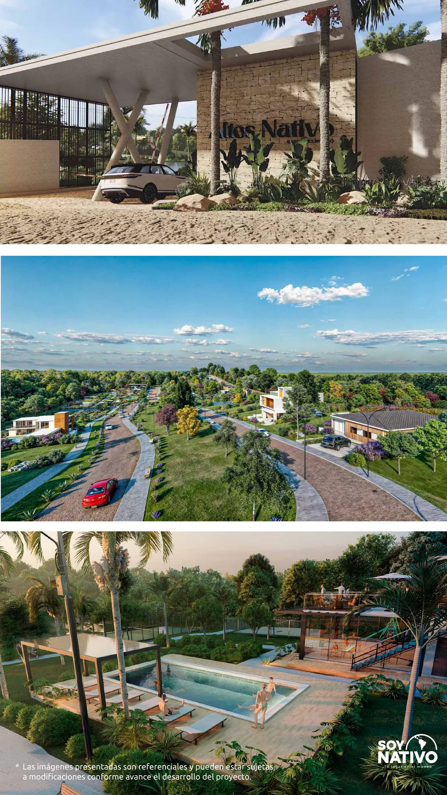
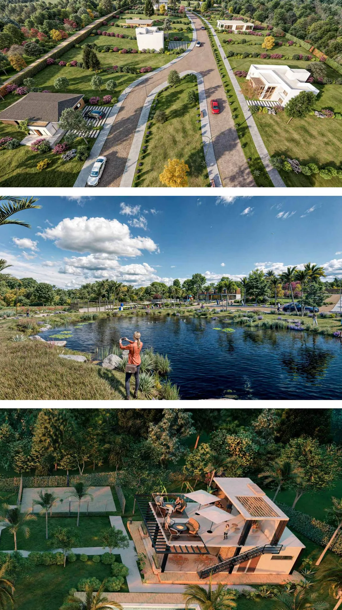
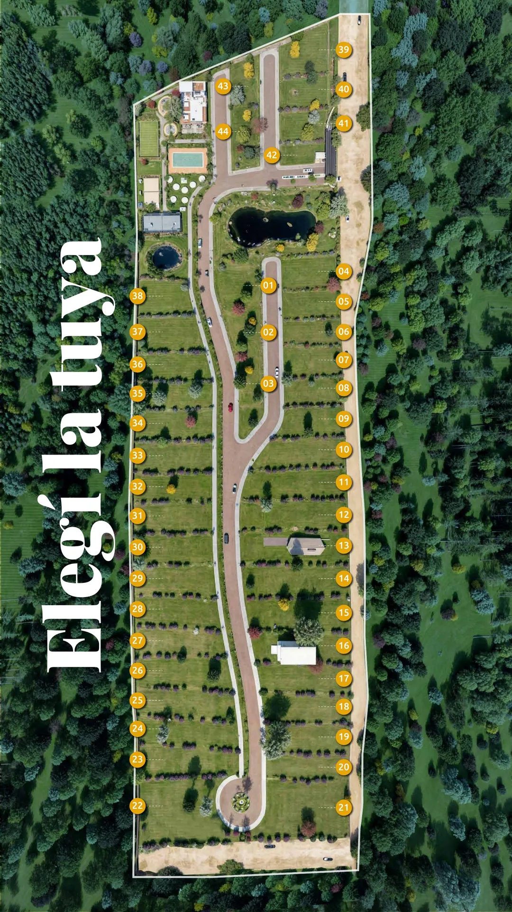
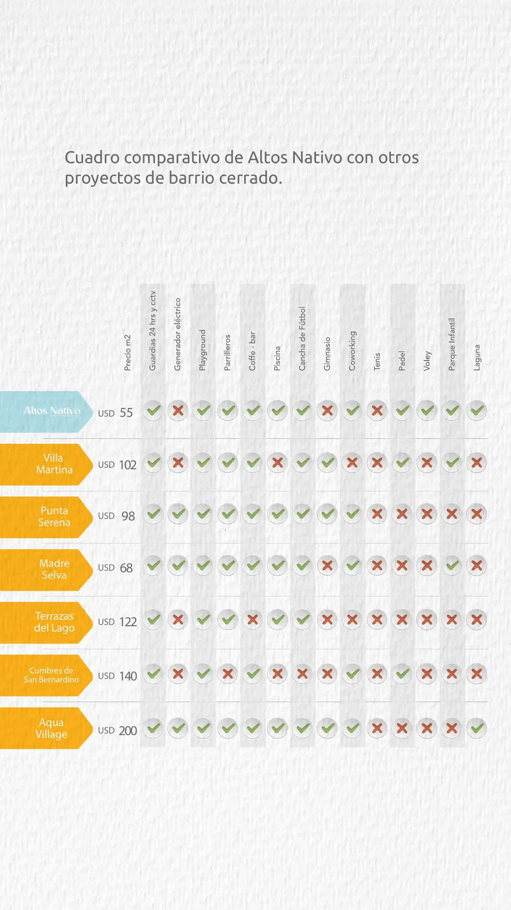

Altos Nativo
Barrio cerrado en Altos
- Ubicación
- Altos
- Lotes
- 44
- Desde Asunción
- 50 km
- Referencia
- A 200 m de Aqua Village










¿Te interesa Altos Nativo?
Escribime y te paso precios, lotes disponibles y coordinamos una visita.
Otras propuestas
Si buscás otra zona u otro tipo de propiedad, mirá estas opciones.